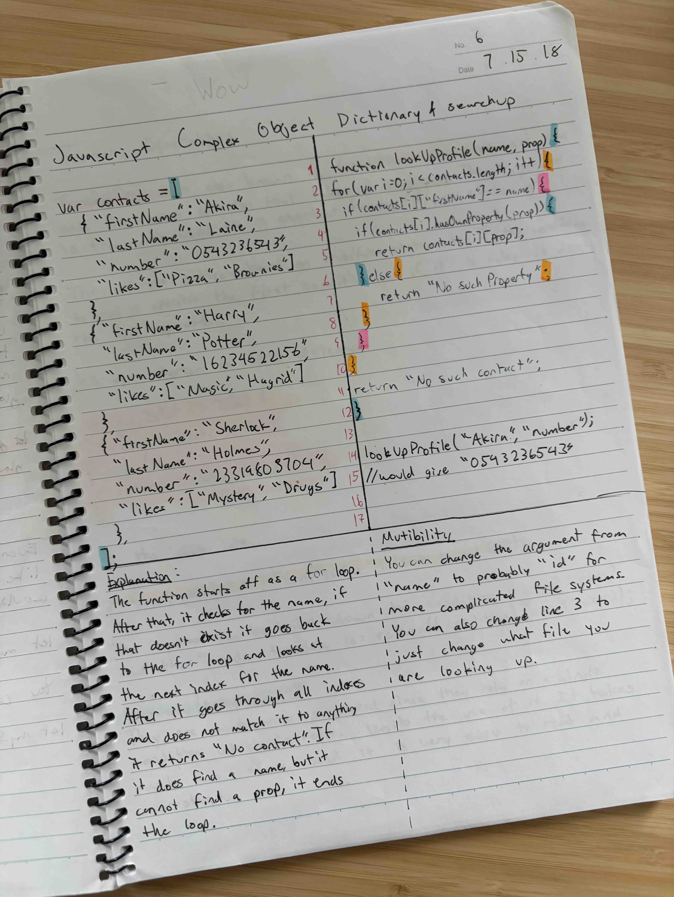
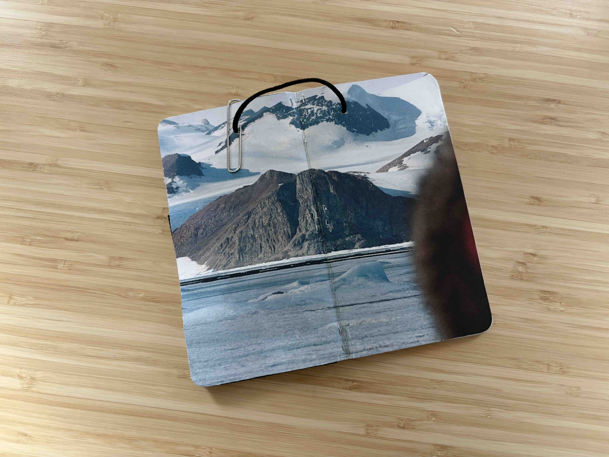

For my birthday this year, my lovely girlfriend gave me a Japanese notebook with a matte gray cover, 6 mm ruling, beautifully smooth paper, and a nice A4 size. Silly dog stickers decorate the front, and on the first page she wrote a note wishing me well with the gift. Every part of that book invites me to write something — anything — in it. Yet, more than half a year later, it remains blank.
The pages are too big and I lack the big enough ideas to fill the space. The paper is too smooth and doesn't work with my favorite pen. But my most honest and unforgivable excuse is that I don't know if I can finish the notebook.
---
During my last spring break in college, I often looked through my old notes and files. Last break, three notebooks caught my attention: a spiral-bound one tediously filled with JavaScript code, brackets and all; an A5 Campus knockoff with an agenda system that lasted only a few pages; and my MCAT study notes. None were more than half full.

“Wow, what a waste of paper,” I would think as I looked for ways to salvage the unused pages. Growing up with hand-me-down school supplies, I treasured the rare notebook that hadn’t already been scrawled in; I dreamed of filling out the “Name” section without having to scratch out someone else’s. Each new notebook felt like a universe of its own, waiting to be filled with my learning, frustrations, and experiments.
Looking back, I wonder what, exactly, I thought I had wasted. These notebooks were simply my attempts to explore something new, so why did it matter that I hadn’t finished them? Somewhere along the way, I had convinced myself that a filled notebook — whatever its length — was the mark of a fruitful endeavor, and that every empty page could have held something more. Yet I couldn’t bring myself to fill those pages with something new, either. After all, a new subject deserved a new notebook, one with enough pages to contain everything I might learn this time.
freedom?

Recently, I've gotten into making my own notebooks. Nothing fancy, just printer paper and a cardstock cover with a staple or some string. For less than a dollar, I can now make a notebook of whatever size or length. I can scribble something down, cross it out, draw something ugly, or dedicate an entire notebook to a passing interest that I’ll forget about in a week. If I run out of pages or abandon it halfway through, I can just make another.
Yet, my girlfriend's notebook remains vacant.
There's an immense pleasure in those empty pages. As I flip through them, I imagine everything that might eventually fill them. Perhaps, they'll become a journal of flowery prose and memories sealed in ink. Or perhaps they'll be filled with drawings, although my artistic abilities leave much to be desired. I make my handmade notebooks for specific interests, but with this gifted one, I need to find an interest worthy of it. And the moment I decide what to write, I have to choose one possibility over all the others. A notebook that could have become anything suddenly becomes something, and making that something real takes skill and effort.
Of course, the irony is that I've probably gotten more use out of these supposedly disposable notebooks than many of the beautiful ones I've received over the years. I can make a hundred notebooks, but none of them will be quite like the one she gave me. It still holds all the things I dream of writing someday, and I still hesitate to commit them to any one idea.
I wish I could end this like a medium article written by a self-help guru, but this thread on notebooks through my life has no complete resolution. I don't think I've quite figured out how to get over that. I still love the possibility of an empty notebook, and I don't know if I'll ever stop worrying about what could have filled its pages instead.
Maybe the takeaway is about life: even if you can’t see where something will lead, that doesn’t mean it isn’t worth starting. You shouldn’t let the jaded adult in you hinder the creative child who wants to learn or explore. Maybe that’s why the regret I hear most often from older adults is that they hesitated to try.
Or maybe the takeaway is just about notebooks. I certainly wasn’t thinking about any of this when I opened those old notebooks so many years ago. Maybe I should pick up a pen and just write a fucking sentence. After all, it’s just a notebook.
♦